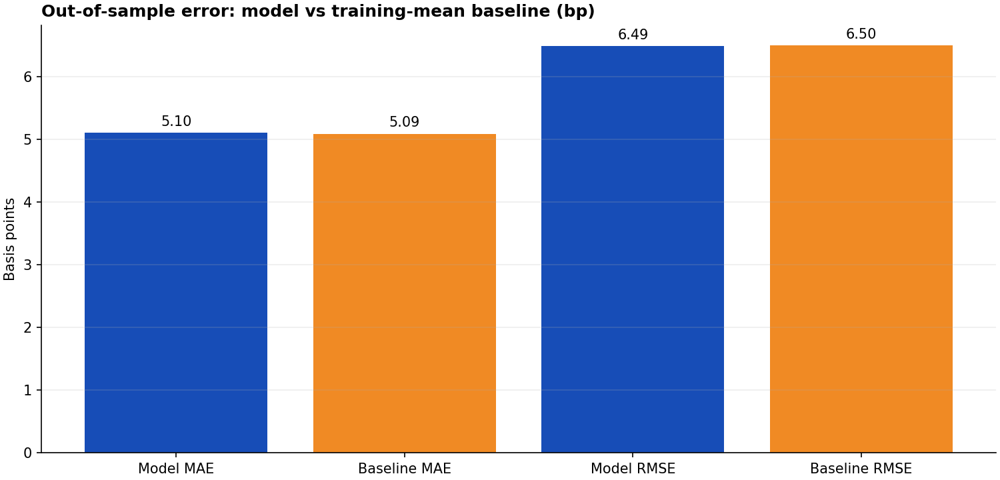

← All studiesSTUDY 09 · PUBLIC DATA
Model Validation
Completed out-of-sample validation of a simple curve-state forecast, including baseline and error metrics.
Not client work. Public-source analysis with stated hypothetical inputs where applicable. Not investment advice.
Observed results
| Test period | 2024-01-02 to 2026-11-09 |
|---|
| Test observations | 714 |
|---|
| Model MAE (bp) | 5.10 |
|---|
| Baseline MAE (bp) | 5.09 |
|---|
| Model RMSE (bp) | 6.49 |
|---|
| Baseline RMSE (bp) | 6.50 |
|---|
| Model direction hit (%) | 50.14 |
|---|
| Baseline direction hit (%) | 48.60 |
|---|
| Slope coefficient | 0.58 |
|---|
| R squared train | 0.0082 |
|---|

Method
Freeze a linear model trained through 2023-12-31; validate next-five-session 10y–2y slope change on 2024–latest. Compare out-of-sample errors and direction accuracy to the training-mean baseline.
Source
https://home.treasury.gov/treasury-daily-interest-rate-xml-feed
Limitations
- This is an illustrative single-target model validation, not a validation of a client or production model.
- One chronological split and one baseline; results may be unstable across regimes.
- Forecast target is yield-curve slope change, not return or investment performance.
Files
Built 2026-11-18 12:12 UTC from local raw inputs under .cache; raw files are excluded from Git.